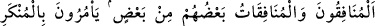
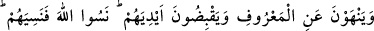
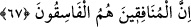
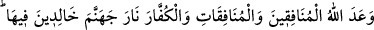
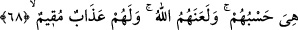

67. Münâfık erkekler ve münâfık kadınlar birbirlerindendir. Kötülüğü emreder,
iyiliği men ederler. Ellerini de sıkı tutarlar. Allah’ı unuttular. O da onları unuttu.
Münâfıklar, işte yoldan çıkanlar onlardır.
“Münâfık erkekler” ki onlar üç yüz kişi idiler “ve münâfık kadınlar” ki onların
sayısı yüz yetmişti “birbirlerindendir.” Yani onlar, iki yüzlülükte ve îmandan uzak
olma konusunda bir şeyi oluşturan parçalar gibi şeklen birbirlerine benzerler.
“Kötülüğü” yâni küfür ve günahları “emreder, iyiliği” îman ve tâati “men ederler.”
Âyetin bu kısmı öncesinin mazmûnunu açıklamakta ve münâfıkların hâlinin
müminlerinkine zıt düştüğünü beyan etmektedir.
Mallarını Allah yolunda harcama, zekat verme ve her türlü hayır işleri yapma
konusunda “ellerini de sıkı tutarlar.” Eli sıkı tutmak cimrilikten kinayedir. Ya da ‘eli
sıkı tuttmak’, ellerini Allah’a duâ ve niyaz için kaldırmaktan imtina etmekten kinâyedir.
Nitekim el-Kâşifî’de böyle geçmektedir.
“Allah’ı unuttular.” Allah’ı zikirden gafil oldular ve O’nun emrini terk ettiler. Öyle
ki Allah sanki onların yanında unutulmuş gibi oldu. Âyette “unutma” zikredilip “terk
etme” kastedilmiştir. Çünkü “unutma” ihtiyârî fiillerden değildir. Dolayısıyla kişi
unutmasından ötürü yerilmez.
“O da onları unuttu.” kahrını ve azâbını değil de lütuf ve ihsanını onlardan kesmiştir.
Burada da “unutma” mecâzî anlamı olan “terk etme” ile tefsir edilmiştir. Çünkü unutma,
Allah Teâlâ için muhaldir.
“Münâfıklar, işte yoldan çıkanlar” fâsıklar “onlardır.” Azgınlık ve fıskta en önde
gidenler onlardır. Fısk, Allah’a itaatten çıkmak, her türlü hayırdan el etek çekmek
demektir.
68. Allah münâfık erkeklere, münâfık kadınlara ve kâfirlere içinde sürekli
kalacakları cehennem ateşini vaadetmiştir. O, onlara yeter. Allah onları
lanetlemiştir. Onlar için sürekli bir azap vardır.
“Allah münâfık erkeklere, münâfık kadınlara ve” küfürlerini açıkça ifâde eden
“kâfirlere içinde sürekli kalacakları” yani içinde sürekli kalmaları takdir ve tayin
edilmiş olan “cehennem ateşini vaadetmiştir.”
“Vaad” kelimesi, hayır ile birlikte kullanıldığında bir menfaati önceden bir kişiye